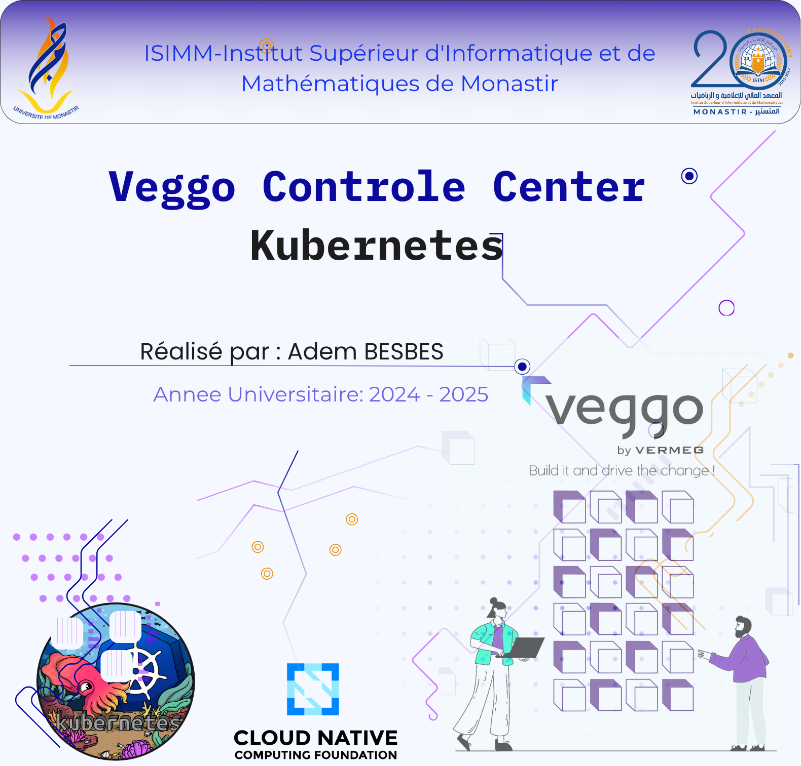

Worked on Veggo Control Center, an advanced Kubernetes dashboard designed for enterprise environments. The application enhances collaboration between DevOps teams and internal users by providing secure access management, centralized monitoring, and streamlined workflows. It improves operational efficiency through controlled Kubernetes access, role-based permissions, and integrated management tools .
